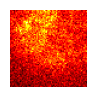
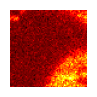
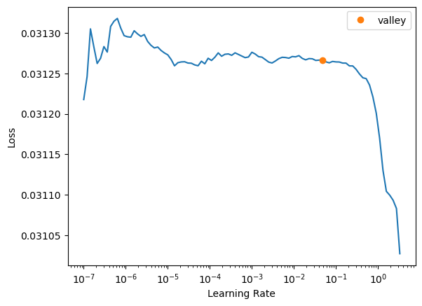
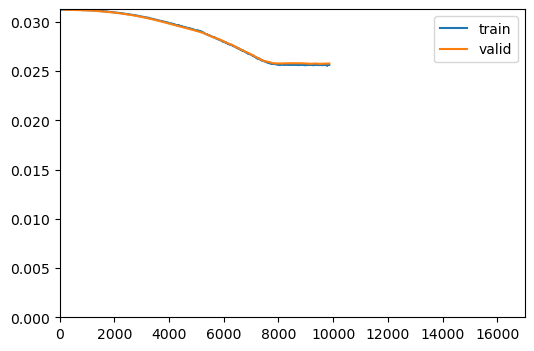
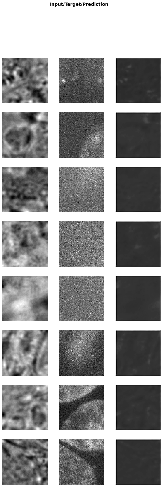

from bioMONAI.data import *
from bioMONAI.transforms import *
from bioMONAI.core import *
from bioMONAI.core import Path
from bioMONAI.data import get_image_files, get_target, RandomSplitter
from bioMONAI.nets import BasicUNet, DynUNet
from bioMONAI.losses import *
from bioMONAI.metrics import *
from bioMONAI.datasets import aics_pipeline, manifest2csv
from monai.utils import set_determinism
set_determinism(0)Demo: 2D image RI2FL
2D RI2FL demo
import warnings
warnings.filterwarnings("ignore")device = get_device()
print(device)cudaDownload Data
image_path = "../_data/aics"
# image_target_paths, data_manifest = aics_pipeline(6, image_path)# save data manifest as csv
# data_manifest.to_csv(image_path + 'aics_dataset.csv')Sorting & Preprocessing data
The downloaded images are very large, so we are going to extract only the channels we need for our model.
# for each image, read channels to extract from data manifest and create the indices dict
indices_list = []
# for X, y in zip(data_manifest["ChannelNumberBrightfield"].values, data_manifest["ChannelNumber405"].values):
# indices_list.append({'C': [X, y], 'Z': range(12,60)})# extract substacks and save them in X and y folders
subdirs = ['../_data/aics/X', '../_data/aics/y']
# for filename, ind in zip(image_target_paths, indices_list):
# extract_substacks(filename, output_dir=subdirs, indices=ind, split_dimension="C")patch_size = (16,64,64)
dir_patches = '../_data/aics/patches'
overlap = 0
# save_patches_grid(subdirs[0], subdirs[1], dir_patches, patch_size, overlap, squeeze_input=True)# save csv files containing train and test datasets
# X_paths = get_image_files(subdirs[0])
# y_paths = get_image_files(subdirs[1])
# manifest2csv(X_paths, y_paths, data_save_path=image_path+'/')Create Dataloader
bs = 8
itemTfms = [RandRot90(prob=.5, spatial_axes=(1,2)), RandFlip(prob=0.75)] # RandCropND(patch_size)
batchTfms = [ScaleIntensity(min=0.0, max=1.0)]
data = BioDataLoaders.from_csv(
dir_patches, # image_path
csv_fname='train_patches.csv', #'train.csv',
header='infer',
pref='./',
item_tfms=itemTfms,
batch_tfms=batchTfms,
img_cls=BioImageStack,
target_img_cls=BioImageStack,
show_summary=False,
valid_pct=.25,
bs=bs,
)
# print length of training and validation datasets
print('train images:', len(data.train_ds.items), '\nvalidation images:', len(data.valid_ds.items))train images: 1361
validation images: 453data.show_batch(max_n=2, cmap='hot')

Load and train a 2D model
# from bioMONAI.nets import Deeplab, DeeplabConfig
from monai.networks.nets import BasicUNet, AttentionUnet, DynUNet, UNet, BasicUNet# model = UNet(spatial_dims=2, in_channels=1, out_channels=1, channels=(16, 32, 64, 128, 256),strides=(2, 2, 2, 2), num_res_units=2).model
# model = AttentionUnet(spatial_dims=2, in_channels=1, out_channels=1, channels=(16, 32, 64),strides=(1, 1))
# model = DynUNet(spatial_dims=2, in_channels=1, out_channels=1, strides=(1, 2, 2),kernel_size=(3, 3, 3), upsample_kernel_size=(2, 2), res_block=True) # it tends to create hot pixels
# model = BasicUNet(spatial_dims=3, in_channels=1, out_channels=1)
# config_2d = DeeplabConfig(
# dimensions=3,
# in_channels=1,
# out_channels=1,
# backbone="resnet10",
# aspp_dilations=[1]
# )
# model = Deeplab(config_2d)model = UNet(spatial_dims=3, in_channels=1, out_channels=1, channels=(32, 64, 128, 256),strides=(1, 2, 2), num_res_units=2)
loss = MSSSIML1Loss(3, levels=2)
metrics = [MSEMetric(), SSIMMetric(3), PSNRMetric(1)]
trainer = fastTrainer(data, model, loss_fn=loss, metrics=metrics, show_summary=False, find_lr=True)Inferred learning rate: 0.001
trainer.fit(100)
58.00% [58/100 10:27<07:34]
| epoch | train_loss | valid_loss | MSE | SSIM | PSNR | time |
|---|---|---|---|---|---|---|
| 0 | 0.031268 | 0.031242 | 176910.546875 | -0.000005 | -52.469769 | 00:10 |
| 1 | 0.031252 | 0.031231 | 176293.453125 | -0.000015 | -52.454567 | 00:10 |
| 2 | 0.031232 | 0.031219 | 175593.078125 | -0.000030 | -52.437244 | 00:10 |
| 3 | 0.031217 | 0.031205 | 174791.843750 | -0.000050 | -52.417343 | 00:10 |
| 4 | 0.031204 | 0.031191 | 173883.375000 | -0.000075 | -52.394669 | 00:10 |
| 5 | 0.031190 | 0.031174 | 172854.921875 | -0.000108 | -52.368843 | 00:10 |
| 6 | 0.031173 | 0.031156 | 171664.921875 | -0.000158 | -52.338776 | 00:10 |
| 7 | 0.031146 | 0.031115 | 169638.375000 | -0.000293 | -52.287109 | 00:10 |
| 8 | 0.031099 | 0.031076 | 167539.500000 | -0.000376 | -52.232944 | 00:10 |
| 9 | 0.031061 | 0.031033 | 165255.500000 | -0.000476 | -52.173225 | 00:10 |
| 10 | 0.031022 | 0.030984 | 162735.906250 | -0.000587 | -52.106373 | 00:10 |
| 11 | 0.030965 | 0.030932 | 159963.093750 | -0.000720 | -52.031601 | 00:10 |
| 12 | 0.030917 | 0.030871 | 156951.609375 | -0.000817 | -51.948891 | 00:10 |
| 13 | 0.030837 | 0.030804 | 153666.218750 | -0.000939 | -51.856831 | 00:10 |
| 14 | 0.030769 | 0.030732 | 150140.296875 | -0.001064 | -51.755806 | 00:10 |
| 15 | 0.030696 | 0.030659 | 146568.828125 | -0.001163 | -51.651009 | 00:10 |
| 16 | 0.030604 | 0.030566 | 142500.828125 | -0.001221 | -51.528568 | 00:10 |
| 17 | 0.030519 | 0.030471 | 138409.531250 | -0.001272 | -51.401817 | 00:10 |
| 18 | 0.030412 | 0.030371 | 134161.468750 | -0.001289 | -51.266178 | 00:10 |
| 19 | 0.030301 | 0.030263 | 129873.078125 | -0.001353 | -51.124763 | 00:10 |
| 20 | 0.030203 | 0.030148 | 125441.039062 | -0.001357 | -50.973660 | 00:10 |
| 21 | 0.030088 | 0.030028 | 120934.562500 | -0.001364 | -50.814423 | 00:10 |
| 22 | 0.029972 | 0.029903 | 116483.140625 | -0.001336 | -50.651211 | 00:10 |
| 23 | 0.029854 | 0.029777 | 112304.687500 | -0.001319 | -50.492134 | 00:10 |
| 24 | 0.029707 | 0.029649 | 108012.968750 | -0.001304 | -50.322430 | 00:10 |
| 25 | 0.029585 | 0.029519 | 103466.375000 | -0.001266 | -50.135143 | 00:10 |
| 26 | 0.029461 | 0.029400 | 99876.921875 | -0.001246 | -49.981121 | 00:10 |
| 27 | 0.029335 | 0.029273 | 94457.625000 | -0.001343 | -49.738247 | 00:10 |
| 28 | 0.029192 | 0.029146 | 91150.921875 | -0.001243 | -49.582493 | 00:10 |
| 29 | 0.029096 | 0.029012 | 85388.148438 | -0.001504 | -49.298100 | 00:10 |
| 30 | 0.028894 | 0.028862 | 70871.164062 | -0.017011 | -48.485123 | 00:10 |
| 31 | 0.028667 | 0.028660 | 64864.191406 | -0.015346 | -48.098396 | 00:10 |
| 32 | 0.028466 | 0.028450 | 59072.335938 | -0.012925 | -47.690029 | 00:10 |
| 33 | 0.028257 | 0.028304 | 53262.515625 | -0.022101 | -47.238323 | 00:10 |
| 34 | 0.028045 | 0.028096 | 47462.183594 | -0.023228 | -46.734333 | 00:10 |
| 35 | 0.027854 | 0.027875 | 42297.187500 | -0.022588 | -46.230377 | 00:10 |
| 36 | 0.027656 | 0.027681 | 37334.640625 | -0.022159 | -45.684052 | 00:10 |
| 37 | 0.027394 | 0.027433 | 32229.150391 | -0.020176 | -45.039745 | 00:10 |
| 38 | 0.027170 | 0.027201 | 27816.417969 | -0.022002 | -44.395489 | 00:10 |
| 39 | 0.026936 | 0.026970 | 24056.304688 | -0.015878 | -43.754837 | 00:10 |
| 40 | 0.026709 | 0.026756 | 20268.578125 | -0.023545 | -43.006744 | 00:10 |
| 41 | 0.026440 | 0.026495 | 16654.212891 | -0.023332 | -42.140301 | 00:10 |
| 42 | 0.026250 | 0.026252 | 13916.763672 | -0.024470 | -41.354378 | 00:10 |
| 43 | 0.026016 | 0.026019 | 11649.303711 | -0.021074 | -40.568268 | 00:10 |
| 44 | 0.025826 | 0.025937 | 10501.747070 | -0.024483 | -40.129303 | 00:10 |
| 45 | 0.025737 | 0.025799 | 9366.617188 | -0.022504 | -39.628517 | 00:10 |
| 46 | 0.025695 | 0.025784 | 9108.937500 | -0.022349 | -39.510757 | 00:10 |
| 47 | 0.025693 | 0.025786 | 9075.808594 | -0.022757 | -39.496986 | 00:10 |
| 48 | 0.025665 | 0.025806 | 9274.915039 | -0.023696 | -39.598488 | 00:10 |
| 49 | 0.025656 | 0.025806 | 9343.794922 | -0.023698 | -39.629581 | 00:10 |
| 50 | 0.025652 | 0.025803 | 9579.787109 | -0.021788 | -39.730675 | 00:10 |
| 51 | 0.025660 | 0.025802 | 9391.625000 | -0.024217 | -39.657143 | 00:10 |
| 52 | 0.025621 | 0.025782 | 9611.320312 | -0.021897 | -39.747711 | 00:10 |
| 53 | 0.025649 | 0.025748 | 9432.041992 | -0.022124 | -39.668121 | 00:10 |
| 54 | 0.025648 | 0.025779 | 9386.577148 | -0.024110 | -39.653721 | 00:10 |
| 55 | 0.025623 | 0.025744 | 9623.333008 | -0.020903 | -39.753510 | 00:10 |
| 56 | 0.025627 | 0.025766 | 9713.740234 | -0.021268 | -39.793358 | 00:10 |
| 57 | 0.025631 | 0.025776 | 9828.585938 | -0.020654 | -39.842957 | 00:10 |
78.24% [133/170 00:07<00:01 0.0256]

trainer.show_results(cmap='gray')
# trainer.save('tmp-model')Test data
Evaluate the performance of the selected model on unseen data. It’s important to not touch this data until you have fine tuned your model to get an unbiased evaluation!